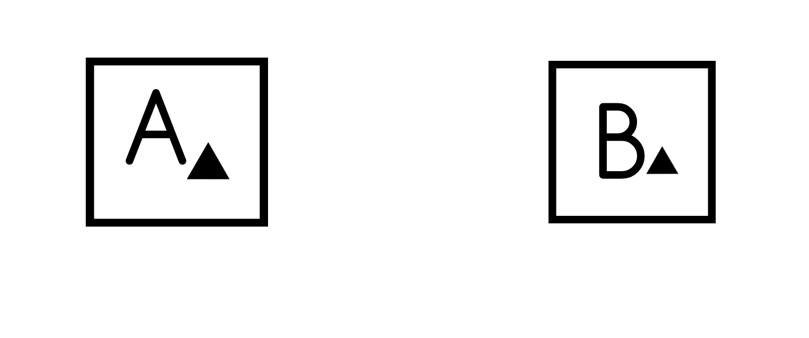
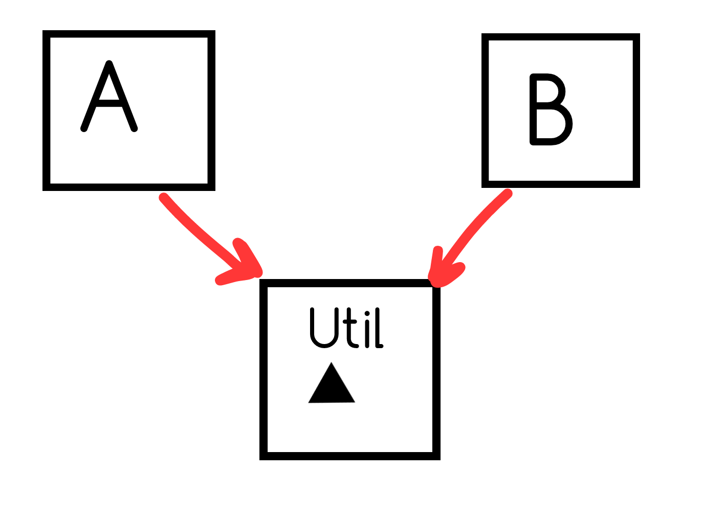
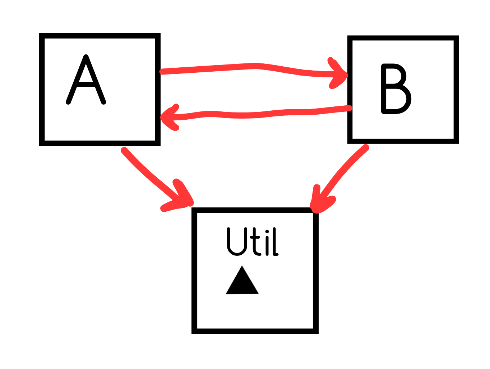
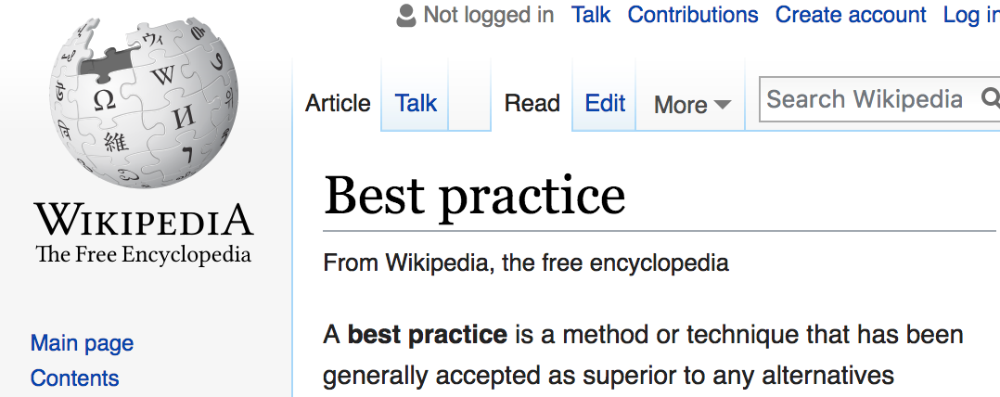
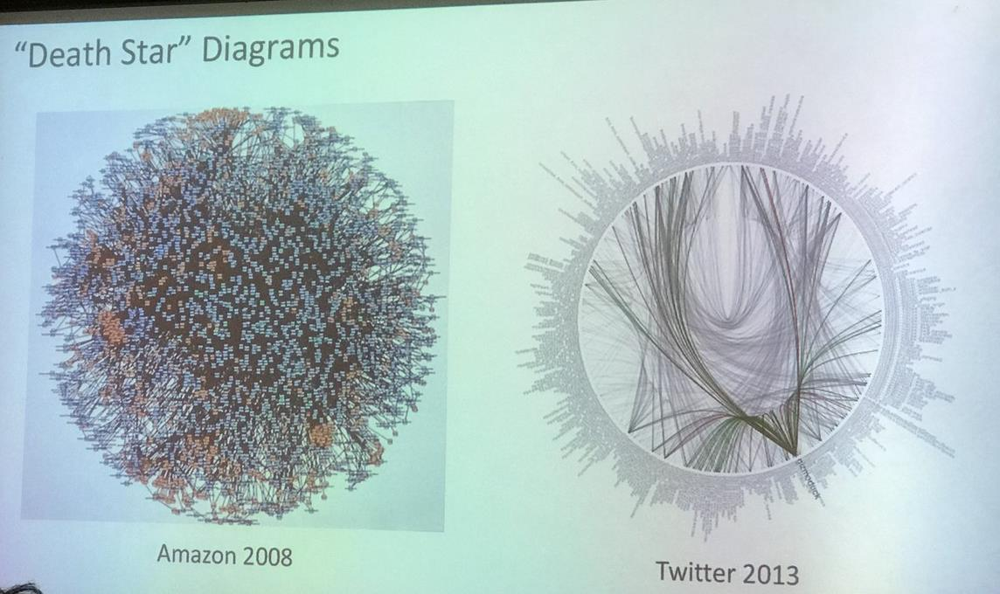
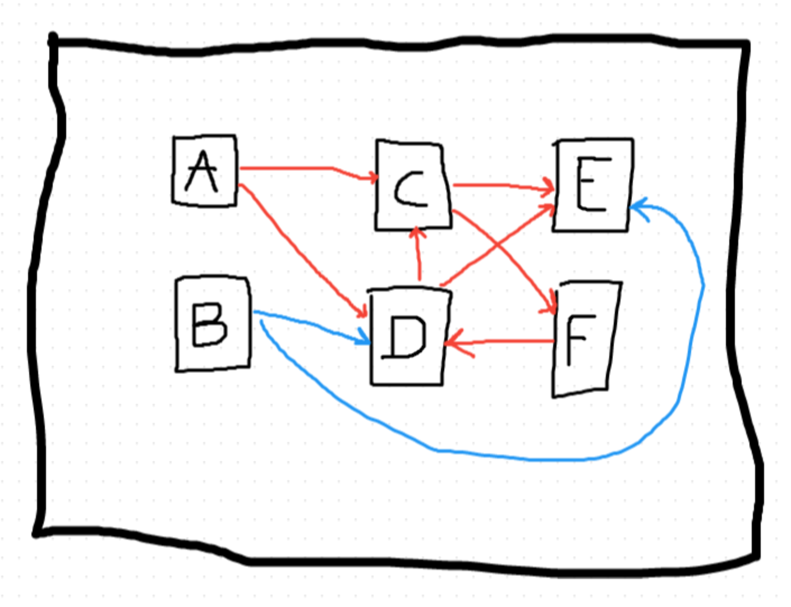
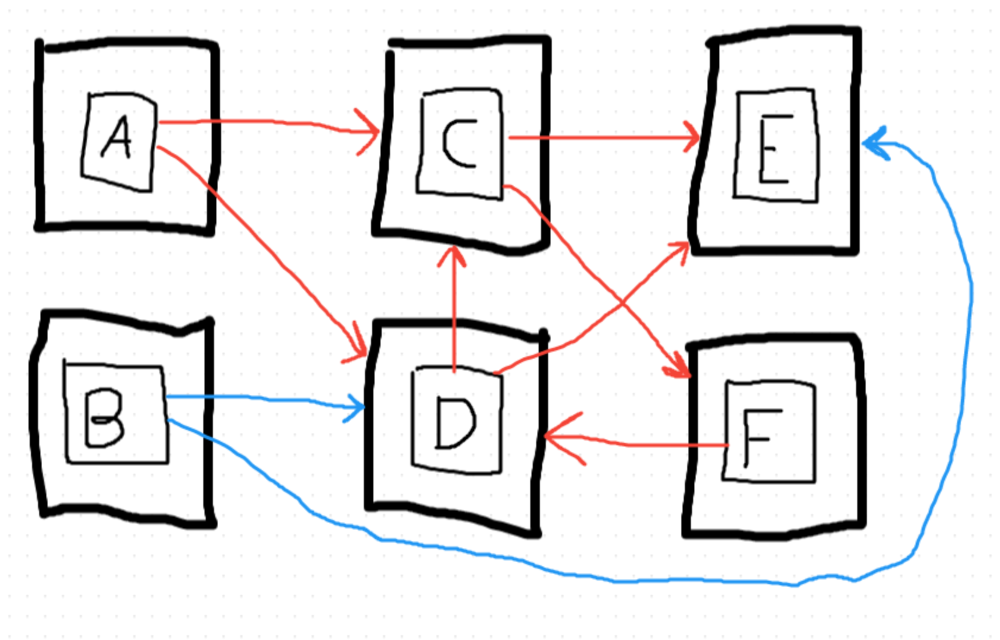

{
codez
var headerParts = headerLine.Split(new[]{':'}, 2);
class Util {
static string[] SplitHeader(string header) {
return header.Split(new[]{':'}, 2);
}
}
var headerParts = Util.SplitHeader(headerLine);
classStringHeaderUtil { static string[] SplitHeader(string header) { return header.Split(new[]{':'}, 2); } } var headerParts = HeaderUtil.SplitHeader(headerLine);
DRY
DRY

▲ === HeaderUtil

what happens when headerLine == "nocolon"?
new[] { "nocolon" }new[] { "nocolon", "" }new[] { "nocolon", null }
in A, if (headerParts.Length == 1)
in B, if (headerParts[1] == null) and change SplitHeader to return new[] { parts[0], null }
 Acyclic Dependencies Principle is ☹
reuse => dependency and coupling
need to find the ballance
Practice
YES / NO


Best Practices
"A best practice is a method or technique that has been generally accepted as superior to any alternatives"

Best Practices?
- Stored Procedures!
Best Practices?
- Stored Procedures!
- Waterfall
- SOAP
- REST
Best Practices are myth!
Bad Practices
- while(*dst++=*src++);
- give interns unlimited admin access to prod db
- use your phone while biking
Worst Practices
- not proactively practicing disaster recovery
- shut your eyes while biking
- reversible passwords
practices
Good Bad Worst Best
TDD
RED => GREEN => REFACTOR
is NOT a design tool
You see, it is not TDD that creates bad designs. It is not TDD that creates good designs. It’s you. TDD is a discipline. It’s a way to organize your work.
DHH: Test induced design damage
Uncle Bob: bad designers induce design damage
Ken: TDD applied badly often lead to design damage
sub-units, integration classes, excessive use of mocks, isolating stable code

public void IsPrime_One() {
Assert.True(Primes.IsPrime(1));
}
bool IsPrime(int number) {
return number == 1;
}
switch (number) {
case 1:
case 2:
case 3:
case 5:
return true;
break;
default:
return false;
}
//algorithm
We are paid to deliver lasting business value
<| we write high quality maintainable code
<| we might write automated tests
<| we aim at high coverage
<| we can choose TDD as a discipline, or not
How many?
How many?
Teams? a whole lot
Services? a whole lot
Network calls? a whole lot
Resources spent de/serializing? a whole fucking lot
Microservices and SOA at Amazon
Microservices and SOA at Amazon
=> Gurupa
- All teams will henceforth expose their data and functionality through service interfaces.
- The only communication allowed is via service interface calls over the network.
- Decoupled deployment and operational model
- early 2000s
Problems
- Latency
- Access exceptions
- Cost
- Service discovery
- Consistency
- (imagine the 'everything is fine' gif)
- Friendly-fire DoS attacks
- Debugging
- Pager escalations

Find the differences


basically trading 💩 for a whole bunch of 💩💩💩
Service boundaries are logical and can be physical
Decoupling is key
Big Design Upfront
Storing libs in git
@kenegozi
http://kenegozi.com
http://kenegozi.com/talks
recap
No best practices. Avoid the bad ones, practice the good ones, be intentional about designs, build great software